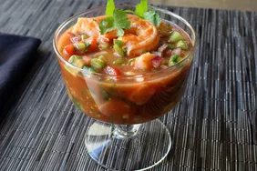

Shrimp Cocktail

Description
exican Shrimp Cocktail is an elegant, chilled appetizer with plump shrimp, cucumber and avocado in a lightly spicy tomato based sauce.
Ingredients
- 1 cup clam juice
- ¼ teaspoon dried oregano
- 1 pound large shrimp, peeled and deveined
- 1 ¼ cups peeled, seeded, diced ripe tomatoes
- 1 cup diced English cucumber
- ½ cup diced celery
- ½ cup finely diced red onion
- 2 tablespoons seeded and diced jalapeno peppers
- ½ cup ketchup
- 2 medium limes, juiced
- 2 tablespoons freshly chopped cilantro, plus more for garnish
- 1 dash Mexican-style hot sauce
- large Hass avocado, cubed
4 servings
Steps
- Bring clam juice and oregano to a boil in a saucepan over medium-high heat. Add shrimp; cook and stir just until shrimp turn pink, about 2 minutes.
Transfer shrimp to a bowl with a slotted spoon; let cool to room temperature. Reserve liquid.
- While the shrimp are cooling, combine tomatoes, cucumbers, celery, onion, and jalapeños in a mixing bowl.
wl. Gently mix in reserved cooking liquid, ketchup, lime juice, 2 tablespoons cilantro, and hot sauce until well combined.
- Place four whole shrimp in a small bowl; cover with plastic wrap. Chop remaining shrimp into bite-sized pieces; add to vegetable mixture and stir to combine.
- When ready to serve, stir avocado into the shrimp cocktail. Divide into four glass bowls; top each with a chilled whole shrimp and garnish with cilantro.
Back to Home